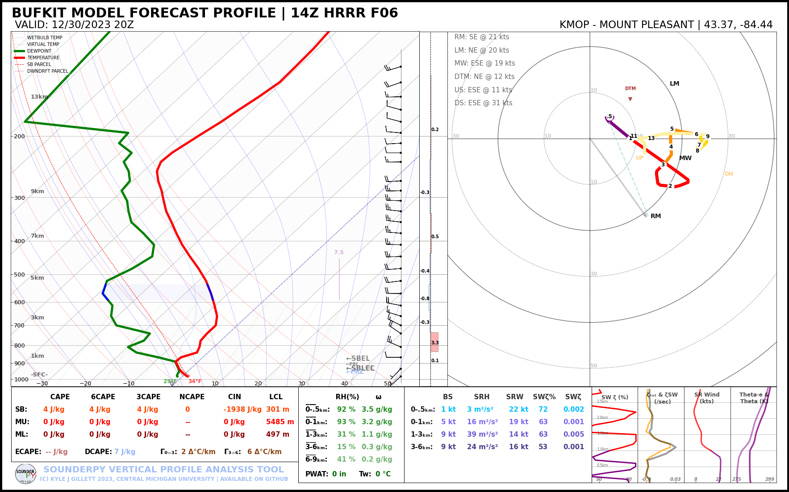

Plotting Soundings with BUFKIT Forecast Model Data
[1]:
# import sounderpy
import sounderpy as spy
## ---------------------------------- SOUNDERPY ----------------------------------- ##
## Vertical Profile Data Retrieval and Analysis Tool For Python ##
## v3.0.5 | Sept 2024 | (C) Kyle J Gillett ##
## Docs: https://kylejgillett.github.io/sounderpy/ ##
## --------------------- THANK YOU FOR USING THIS PACKAGE! ------------------------ ##
Understanding SounderPy Functionality
To get model forecast data via BUFKIT, we need to use the ``get_bufkit_data()`` function
Reading the documentation on BUFKIT data access may prove useful before using this notebook: https://kylejgillett.github.io/sounderpy/gettingdata.html#model-forecast-data-bufkit
[2]:
################################ THE FUNCTION ###################################
# to get bufkit data, we need to use the `get_bufkit_data()` function
# `get_bufkit_data(model, station, fcst_hr, run_year, run_month, run_day, run_hour)`
################################################################################
########################## TYPES OF BUFKIT DATA ################################
# we can access archived model forecasts from the GFS, NAM, RAP & HRRR
# or most recent run forecasts from the GFS, NAM, NAMNEST, RAP, HRRR, SREF, & HIRESW
################################################################################
########################## WHERE DATA IS AVAILABLE #############################
# NOTE: bufkit forecast data is *only available at specific BUFKIT site locations*
# you can find them here: http://www.meteo.psu.edu/bufkit/DomainNAMRAP_NAM_12.html
################################################################################
############################# LETS GET SOME DATA ###############################
# to get archived forecasts we need every kwarg. (a kwarg is a Keyword Argument, like 'year', and 'station')
# the line below will get us a 12z GFS forecast from 08/05/2023 at forecast hour 6 for bufkit site KMOP:
# clean_data = spy.get_bufkit_data('gfs', 'kmop', 6, '2023', '08', '05', '12')
# to get the most recent forecasts we use the same function, but we *don't need a year, month, day or hour kwarg!*
# you just need a model, station and forecast hour.
# this will get you the most recent HRRR run, at forecast hour 6, for
# site `KAMA` (AMARILLO ARPT(AWOS)):
clean_data = spy.get_bufkit_data('hrrr', 'kama', 6)
> BUFKIT DATA ACCESS FUNCTION
---------------------------------
> COMPLETE --------
> RUNTIME: 00:00:00
> SUMMARY: SUMMARY: 01Z HRRR F06 for KAMA,AMARILLO ARPT(AWOS) at 09-30-2024-07Z
> THERMODYNAMICS ---------------------------------------------
--- SBCAPE: 0.0 | MUCAPE: 0.0 | MLCAPE: 0.0 | MUECAPE: --
--- MU 0-3: 0.0 | MU 0-6: 0.0 | SB 0-3: 0.0 | SB 0-6: 0.0
> KINEMATICS -------------------------------------------------
--- 0-500 SRW: 22.1 knot | 0-500 SWV: 0.012 | 0-500 SHEAR: 11.6 | 0-500 SRH: -22.5
--- 1-3km SRW: 17.7 knot | 1-3km SWV: 0.005 | 1-3km SHEAR: 19.1 | | 1-3km SRH: 107.2
==============================================================
[3]:
# Lets check out the BUFKIT data that we just accessed
# and stored in the `clean_data` variable:
# `clean_data` is a python dictionary of 'clean' vertical profile data
# it comes with temperature, dewpoint, pressure, height, u and v
# as well as a number of useful 'meta data'
clean_data
[3]:
{'p': array([891.8, 889.2, 884.3, 876. , 863.8, 848.3, 830. , 810.1, 788.7,
765. , 739.2, 711.1, 680.7, 648.1, 613.1, 575.6, 535.9, 496.9,
461.4, 429.1, 399.6, 372.5, 347.7, 325. , 304.3, 285.4, 268.2,
252. , 237.2, 223.5, 209.7, 195.8, 181.9, 168. , 154.1, 140.2,
126.4, 112.5, 98.6, 85.7, 75.3, 66.9, 59.1]) <Unit('hectopascal')>,
'z': array([ 1106.64, 1131.8 , 1179.67, 1261.54, 1383.33, 1540.37,
1728.85, 1937.53, 2166.38, 2425.58, 2715.15, 3039.96,
3403.25, 3807.34, 4259.15, 4766.1 , 5332.18, 5921.95,
6492.23, 7043.56, 7578.68, 8100.95, 8607.78, 9098.21,
9570. , 10023.95, 10458.54, 10888.67, 11301.12, 11700.96,
12123.7 , 12573.5 , 13050.5 , 13557.18, 14097.28, 14676.57,
15300.17, 15991.56, 16767.49, 17591.65, 18355.48, 19057.97,
19798.95]) <Unit('meter')>,
'T': array([ 19.04, 21.14, 22.24, 22.54, 22.54, 21.84, 20.54, 18.94,
17.04, 15.64, 13.74, 11.84, 9.44, 6.44, 2.94, -0.76,
-4.56, -8.56, -12.16, -15.16, -17.86, -20.36, -23.36, -26.66,
-29.86, -32.76, -35.86, -38.76, -41.96, -45.16, -47.96, -50.26,
-53.46, -57.36, -61.66, -65.96, -69.16, -71.66, -72.66, -72.06,
-70.86, -69.66, -68.26]) <Unit('degree_Celsius')>,
'Td': array([ 5.39, 5.1 , 4.43, 3.59, 2.57, 1.73, 0.81,
0.73, 0.22, -5.23, -10.13, -14.12, -19.35, -21.54,
-22.28, -25.75, -33.13, -38.42, -42.84, -46.31, -49.93,
-50.54, -52.03, -53.6 , -57.98, -70.47, -60.74, -63.41,
-66.86, -67.29, -67.75, -73.05, -73.54, -74.08, -74.65,
-100.94, -101.43, -101.97, -102.58, -103.23, -103.82, -104.35,
-104.91]) <Unit('degree_Celsius')>,
'u': array([ 0.97136174, 1.55462148, 0.97216307, 1.16480613, 2.9160719 ,
4.08005986, 3.69202977, 4.27471044, 5.05259535, 9.13328918,
6.99691621, 2.52753929, 0.97242013, -0.38857584, -1.36089259,
-1.75036797, -2.33241795, -1.74950424, 0.19412883, 3.11069421,
2.52716803, 0.38848813, 5.24892528, 6.0259933 , 6.61034747,
13.80245445, 20.41111293, 27.01875861, 30.7100709 , 32.85351073,
33.03983283, 28.37762667, 24.87687599, 23.90654375, 23.71476314,
20.60613188, 12.82870145, 8.74264972, 8.16479539, 1.5542662 ,
-4.08353311, -5.05125965, -4.08353311]) <Unit('knot')>,
'v': array([ 5.82962746, 11.66687842, 15.94038265, 19.04441195,
20.41276377, 18.07523199, 15.15681088, 12.43580921,
9.5225879 , 2.72101612, -2.91540111, -6.99750993,
-7.38626422, -7.38979085, -8.16739685, -9.91670873,
-10.68847166, -11.27507583, -12.63850917, -15.35814056,
-17.69040197, -20.99640629, -19.63036381, -15.93891479,
-16.52704772, -18.85866249, -14.9660472 , -12.82944984,
-15.93899449, -21.38426601, -22.74162586, -18.85405008,
-12.82891814, -9.91219279, -10.11031201, -11.27685368,
-9.13711766, -2.52508926, -1.74889 , -0.5829722 ,
2.13935909, 6.02199103, 2.13935909]) <Unit('knot')>,
'omega': array([ 0.1, 0.2, 0.2, 0.2, 0.2, 0.1, 0. , 0. , 0. , -0.2, -0.3,
-0.3, -0.1, 0.1, 0.1, 0.1, 0.1, 0.1, 0.1, 0.1, 0.1, 0.1,
0.2, 0.2, 0.1, 0. , 0. , 0. , 0. , 0. , -0.1, -0.1, -0.1,
0. , 0. , 0. , 0. , 0. , 0. , 0. , 0. , 0. , 0. ]) <Unit('pascal / second')>,
'site_info': {'site-id': 'KAMA',
'site-name': 'AMARILLO ARPT(AWOS)',
'site-lctn': 'UA',
'site-latlon': [35.23, -101.7],
'site-elv': 1099,
'source': 'BUFKIT FORECAST PROFILE',
'model': 'HRRR',
'fcst-hour': 'F06',
'run-time': ['2024', '09', '30', '01'],
'valid-time': ['2024', '09', '30', '07']},
'titles': {'top_title': 'BUFKIT MODEL FORECAST PROFILE | 01Z HRRR F06',
'left_title': ' RUN: 09/30/2024 01Z | VALID: 09/30/2024 07Z',
'right_title': 'KAMA - AMARILLO ARPT(AWOS), UA | 35.23, -101.7 '}}
LETS PLOT THE DATA ON A SOUNDING AND HODOGRAPH
[4]:
# lets make a sounding!
spy.build_sounding(clean_data)
> SOUNDING PLOTTER FUNCTION
---------------------------------
> COMPLETE --------
> RUNTIME: 00:00:03

[ ]: